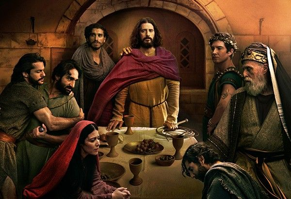
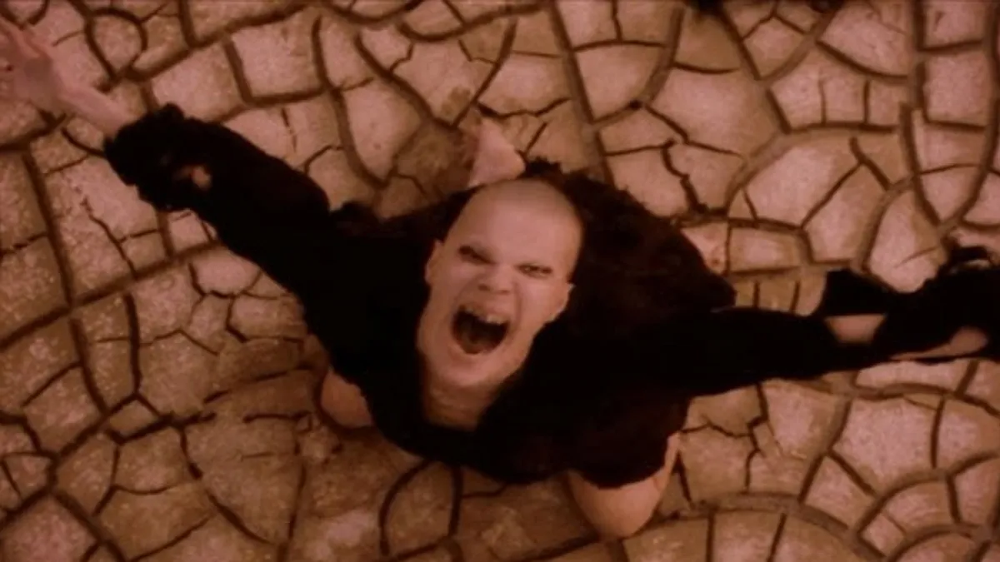
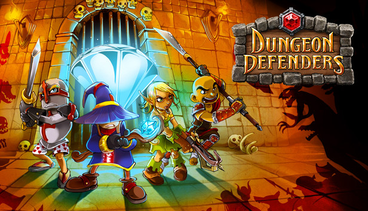
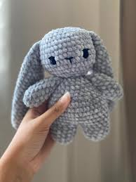
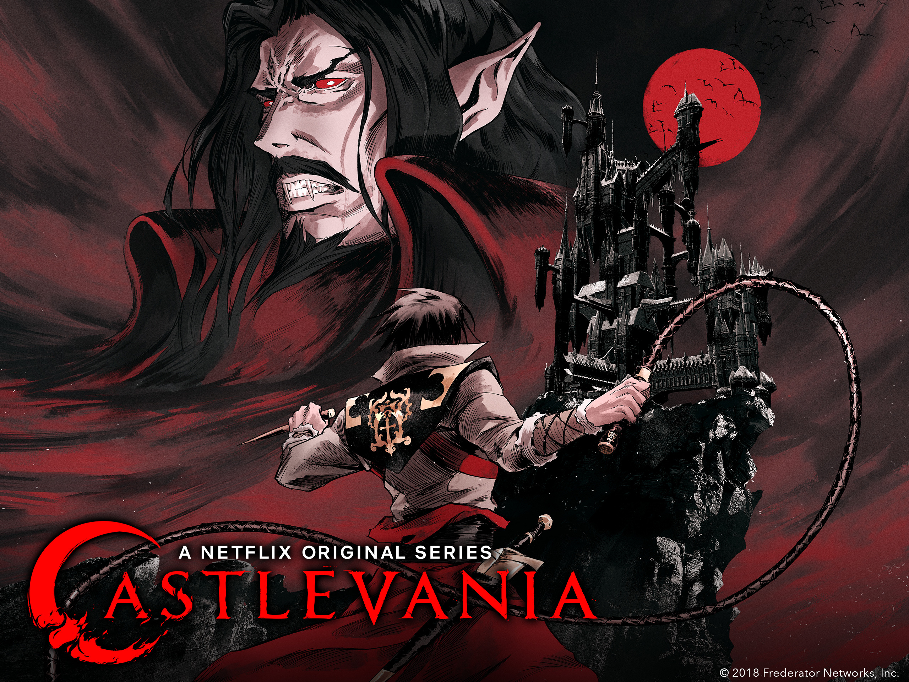
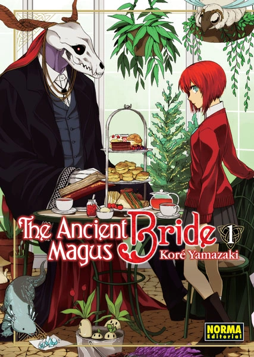

En primera instancia
Aproveche a darme un descanso del estudio y pasar mas tiempo con mi madre en la casa, viendo una serie nueva de la cual nos la pasamos habalando y objetando de las que nos gustó de dicha serie de nombre "The Chosen"

en esta serie nos reimos mucho pues no es como otras series que tratan de la religión, sin embargo mi madre optó por tambien reabrir un Trauma del cual masomenos me habia recuperado y eso es la pelicula de "La pasión de Cristo"
es que encerio profe, como no traumarse con esto


En segunda instancia
Me puse a jugar un poco al World of Warcraft, y me di cuenta de que el juego se me habia olvidado completamente y no solo eso, sino que tambien me tome el tiempo de probar otros juegos, para intentar salirme de la rutina, jugando juegos de terror, incluso le di una opotunidad a un juego de defender mazmorras, que se llama Dungeon Defenders, me gustó mucho aunque no sea mi estilo de juego, un amigo me convencio ademsas de que pide muy poco de los recursos de la computadora y eso ya es bastante bueno para mi

un amigo supuso que seria bueno y terminamos desvelandonos jugando este jueguito que para todo tiene que ver con la programación, creame, sino, digame y le muestro el juego xd
En tercera instancia
Me puse a ver un poco de anime, y me di cuenta de que no habia visto nada nuevo, asi que me puse a ver animes medio viejitos, tienen su lugar despues de todo, volvi a hacer peluches a crochet, si quiere uno diga que discutimos el precio, pero me habia olvidado lo lindo que es hacer los peluchitos estos, bastante relajante y todo


